Set Up & Connect to Salesforce
Log in to AtomSphere, build the start of an integration process, and test connectivity to Salesforce.
What you'll cover
- Login and get familiar with AtomSphere
- Create a new process and configure the Salesforce Start shape connector
- Execute the process in test mode to test Salesforce connectivity
Login and get familiar with AtomSphere
At the start of training, the instructor will add your email address and name to the User Management console of the AtomSphere training account, assigning you as a Standard User. Upon doing so, you’ll receive a welcome email with your user name and temporary password.
Log in to Boomi AtomSphere using your credentials
Navigate to
Enter login credentials and click on the ‘Sign In’ button.
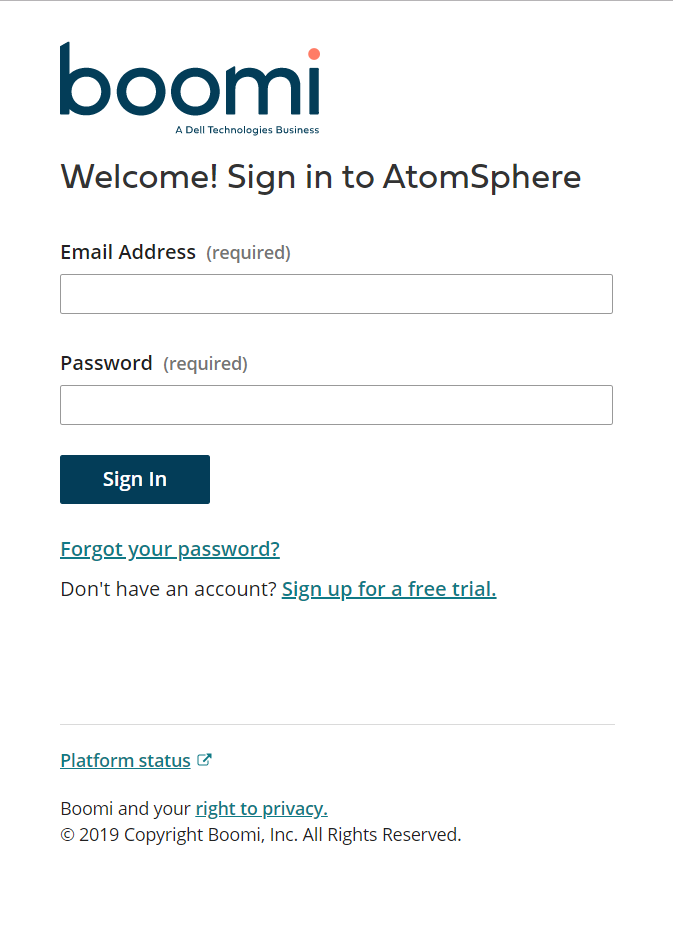
Once logged in, switch from the “Home” page to “Integration” view.
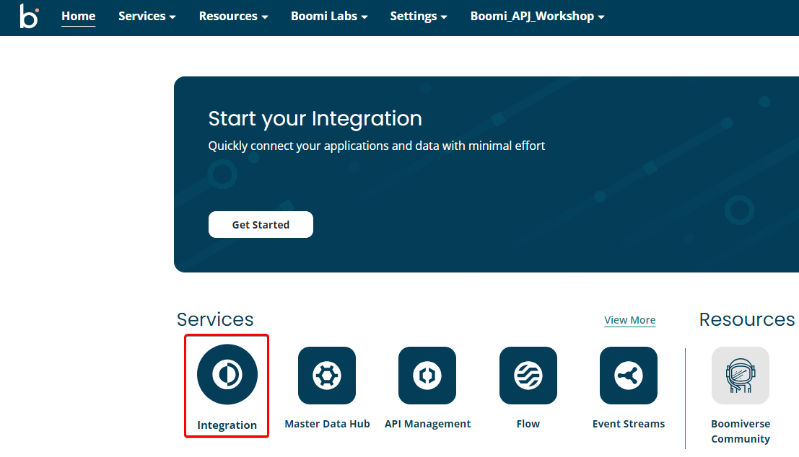
Find the folder dedicated to today's workshop and expand it.
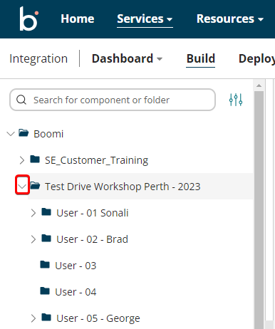
Take a note of the ‘User-XX’ folders that reside within the forkshop folder. Each of these folders are associated with the number assigned to you by the trainer. Once you know your number, make sure you rename the folder so you can identify it later (i.e. ‘User-01-Bob Smith’)
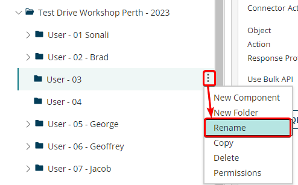
As you begin to build out your integration process, you’ll want to be sure you only create and save components within your individual folder. Since we’re sharing one account, this will ensure that any work you complete does not interfere with the work of others in the group. Thus, if you have been identified as ‘User01’ at your workstation, then you’ll be building out your Boomi process and all corresponding components within your ‘User-01’ folder
Take note of the other predefined folders.
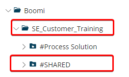

Create a new process and configure the Salesforce Start shape connector
Create a new Process Component. Within your ‘User-XX’ folder, create a "New Component"
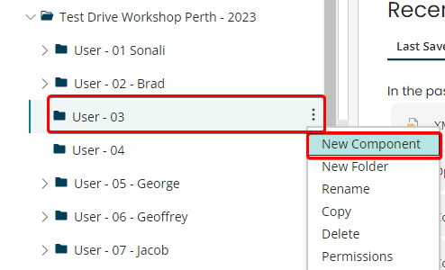
Choose ‘Process’ and click the Create button.
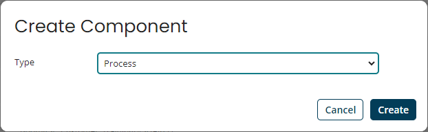
The Start Shape dialogue box appears. From the Connector dropdown, choose ‘Salesforce’. Since this is our Start connector, the default Action is ‘Get’.
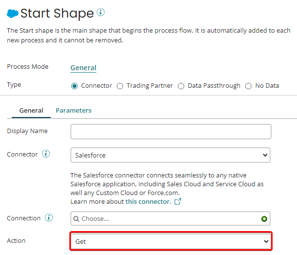
The Salesforce Connection is already configured and is housed in the ‘SHARED’ folder. Browse and load the prebuilt ‘Boomi Salesforce’ connector.
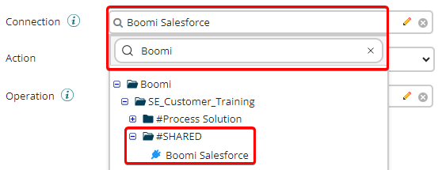
Create a new Operation by clicking on the ‘+’ button.
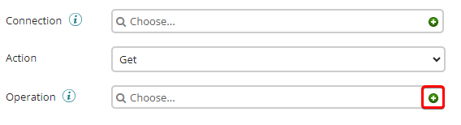
Name the Operation ‘Get Prospect Accounts’ and Save, then click on the ‘Import’ button. This will allow us to programmatically import the Response Profile from our Salesforce instance.
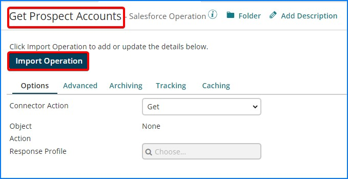
Browse and load the prebuilt ‘Boomi Salesforce’ connector from the ‘SHARED’ folder and click ‘Next’
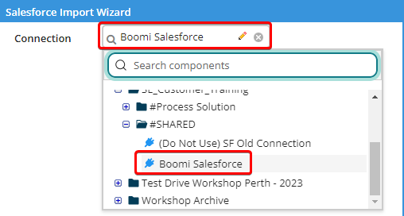
Choose ‘Account’ from the Object Type dropdown and ‘Query’ from the Action dropdown. Click Next
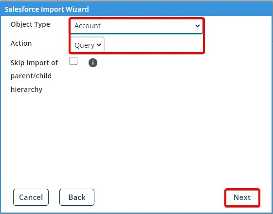
The ‘Account’ object appears with the option of choosing any child objects as well. We’ll just be using the Account object. Click Next.
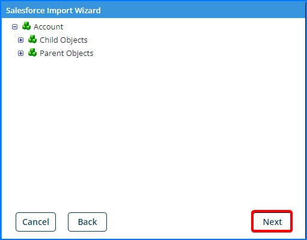
Click ‘Finish’ to close the Salesforce Import Wizard.
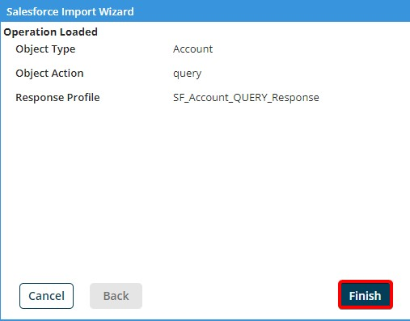
Notice how the Response Profile is loaded and all the corresponding Fields are listed:
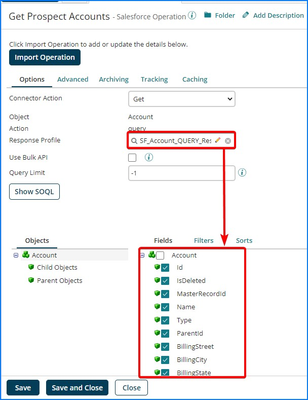
Now that we imported the fields that belong to the Account object, we’ll want to configure our query to only pull in Accounts that are of type ‘Prospect’. To accomplish this, we’ll first click on the ‘Filters’ tab and under the ‘Logical – AND’ node select ‘Add Expression’
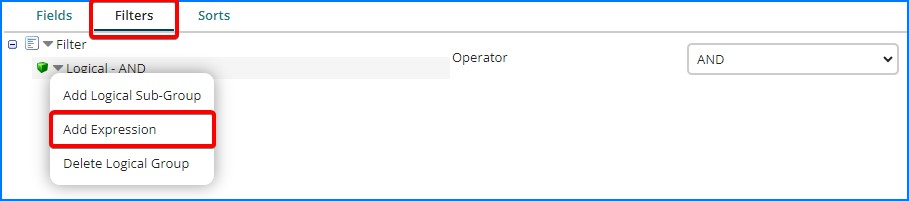
Highlight the ‘Expression’ element and type ‘Type=’ for the Filter Name. Then, click on the ‘Browse’ button, select the ‘Type’ field from the profile and click ‘OK’.

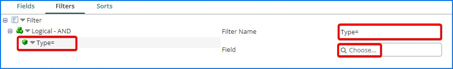
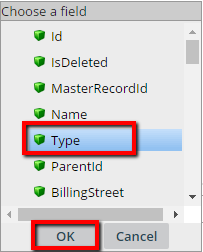
‘Save and Close’ the ‘Get Prospect Accounts’ Salesforce Operation
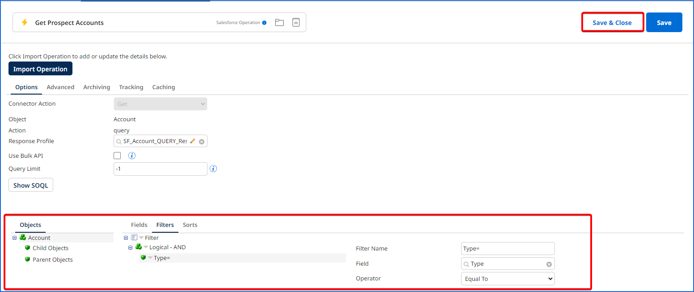
Within the Start Shape configuration pane, click on the ‘Parameters’ tab. Then click on the ‘+’ button to add a parameter.
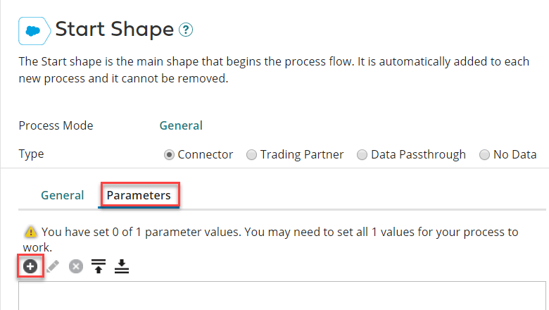
Browse and choose the ‘Type=’ filter that you created earlier. Click ‘OK’.
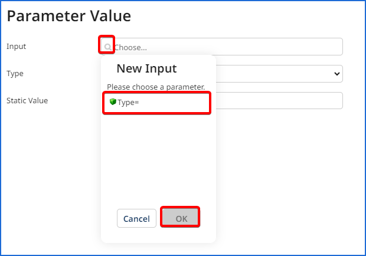
Choose ‘Static’ as the Type and type ‘Prospect’ as the Static Value. Then click ‘OK’
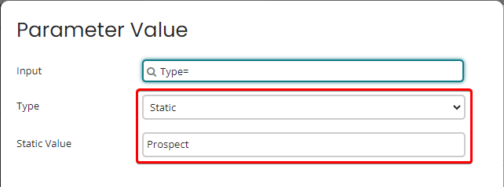
This will limit our query to only pull back Accounts in our Salesforce instance that are of type Prospect. Click 'OK'.
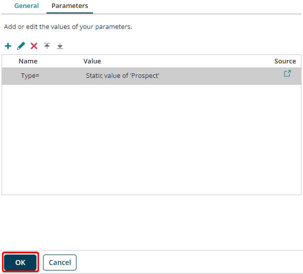
Now our Salesforce Start shape is fully configured. Click ‘Save’ to save the Connection.
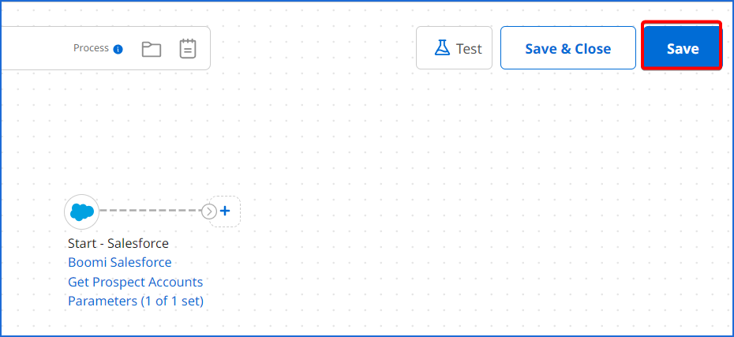
Rename the process “Salesforce to Database - <Attendee Name>”. Click Save one more time.
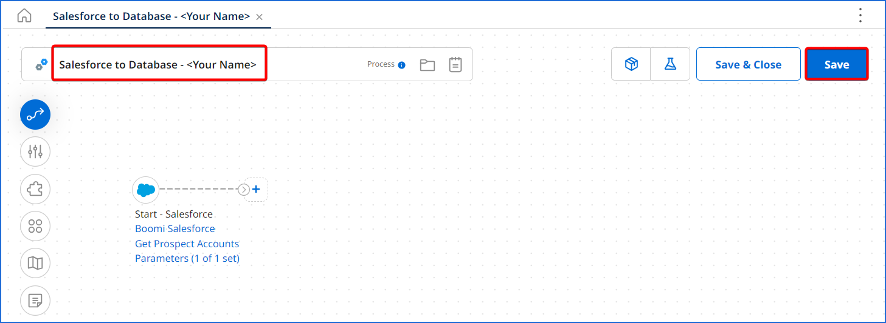
Execute the process in test mode to test Salesforce connectivity
Click on the ‘Test’ button in the upper-right of the Process Canvas. If you are then prompted to Save the process, click on the ‘Save’ button.
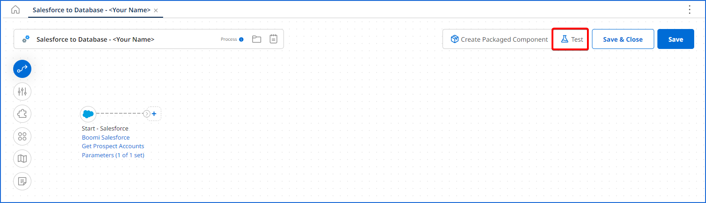
From the ‘Select Atom…’ dropdown, select the ‘workshop-atom’ Atom and click ‘OK’.
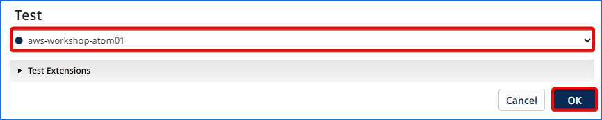
Upon successful completion, the connector should be highlighted in green and there should be 1 Document within the Document pane, assuming only 1 Account in Salesforce is of type Prospect. Clicking on the Connection Data tab within the Test Results pane allows for the ability to open the Document(s) to view its contents
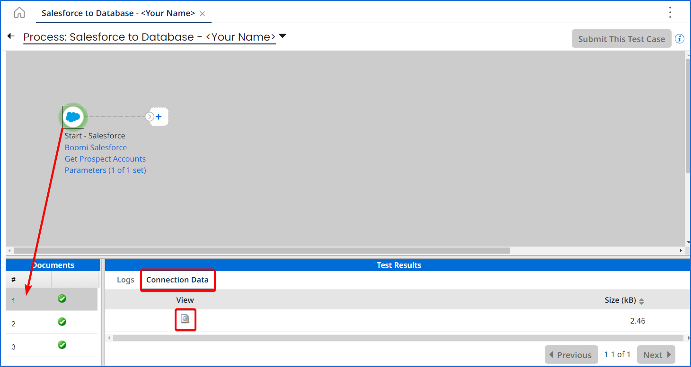
Within the Document Viewer, the ‘Formatted XML’ tab allows for a cleaner view of the Document contents. After viewing the document, click on the ‘Close Document Viewer’ button.
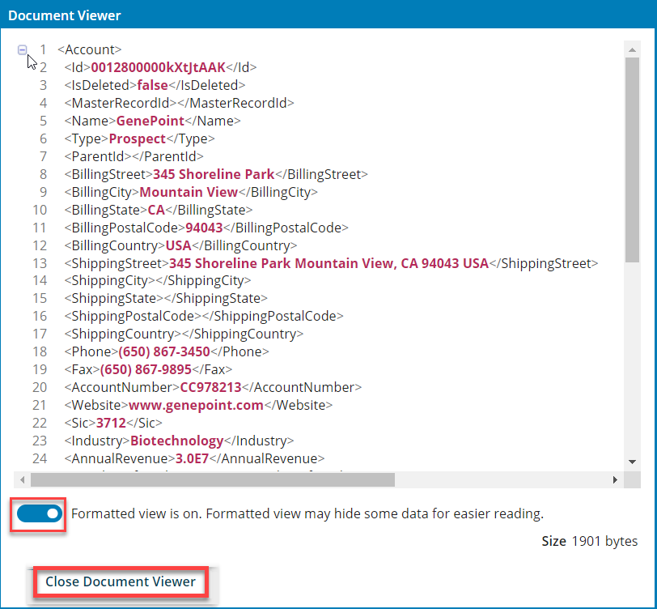
After executing the test, click on the ‘Return to Edit Mode’ arrow in the upper-left corner. This will navigate back to the Process Canvas.
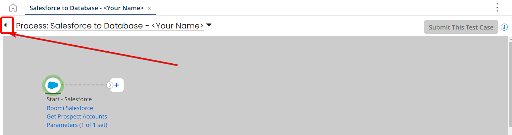
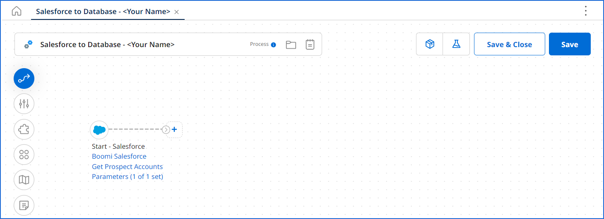